In this part, the camera calibration and pose estimation pipeline was implemented to prepare a custom dataset for NeRF training.
First, multiple images of an ArUco calibration tag were captured from different viewpoints. Using OpenCV’s ArUco detector, the 2D corner coordinates of the tag were extracted and used with cv2.calibrateCamera() to estimate the camera’s intrinsic parameters (focal length and principal point) and distortion coefficients.
For each object-scan image, the tag was detected again, and the Perspective-n-Point (PnP) algorithm was applied to estimate the camera’s extrinsic parameters (rotation and translation), which were converted into camera-to-world transformation matrices.
All images were then undistorted based on the calibration results and organized together with their corresponding poses and focal length into a structured .npz dataset.
The visualization displays the reconstructed camera frusta and orientations around of 2 captures objects (first row: stuffed animal, second row: banana and pine cones).
In this part, the goal was to represent a 2-D image not as a collection of pixels, but as a continuous function that maps spatial coordinates to color values. To achieve this, a small neural network (a multi-layer perceptron) was trained to learn this mapping:
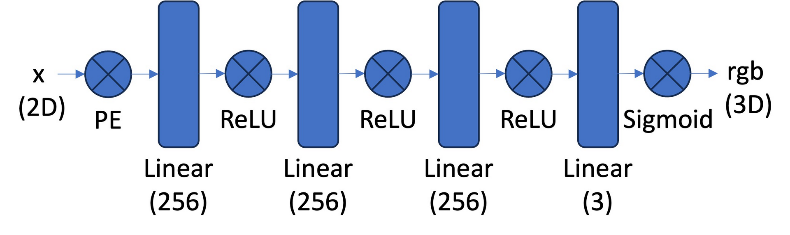
When given a coordinate (x, y) within the image, the network predicts the corresponding RGB color. During training, a large number of pixel positions were randomly sampled from the image, and the network learned to reproduce their colors by minimizing the difference between its predictions and the true pixel values. To help the network capture fine details, each coordinate was first transformed through a positional encoding, which allows the model to represent high-frequency variations such as sharp edges and textures. By the end of training, the network effectively memorized the image as a continuous implicit function, enabling smooth reconstructions and demonstrating how neural fields can store and reconstruct visual data without relying on a traditional pixel grid.
Experimental Configurations
| Configurations | Channel Size | Frequency (L) | Learning Rate |
| Base | 256 | 10 | 0.01 |
| Reduced Frequency | 256 | 5 | 0.01 |
| Wider | 512 | 10 | 0.01 |
| Narrower | 128 | 10 | 0.01 |
| Higher LR | 256 | 10 | 0.5 |
| Lower LR | 256 | 10 | 0.005 |
Training Behavior
The figure below shows the PSNR loss over training iterations for all configurations.
All models start with low PSNR (poor reconstructions) and gradually improve as training progresses.
On the fox image: Base, Narrower, and Lower LR networks reach similar final performance, indicating that moderate changes in width have little effect on fitting a single image.
The Reduced Frequency model converges to a worse PSNR, confirming that fewer positional encoding frequencies limit the ability to reproduce fine details and textures.
Higher LR and Wider configurations both fail to improve beyond their initial values: too high a learning rate causes unstable optimization.
Overall, the Base configuration provides the best balance between speed and stability, while the comparison highlights the sensitivity of implicit neural representations to both the frequency encoding and the learning rate choices.
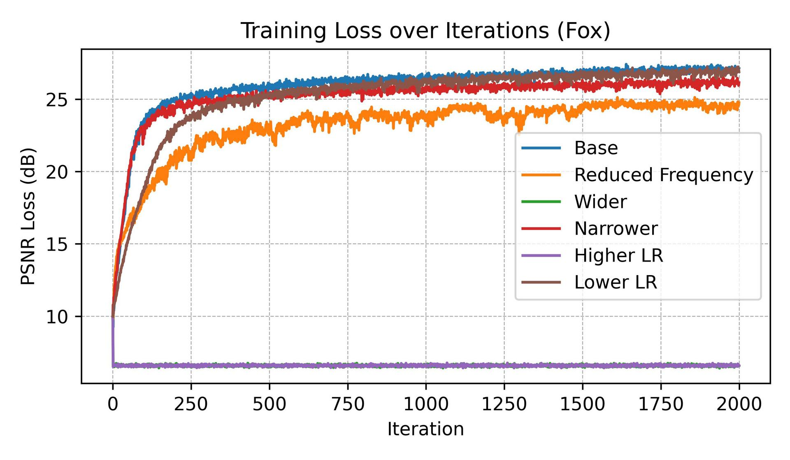
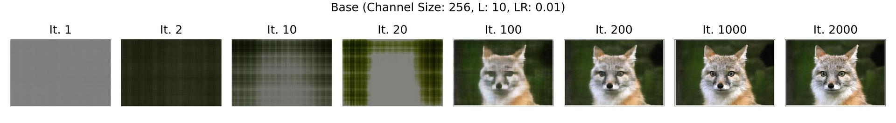
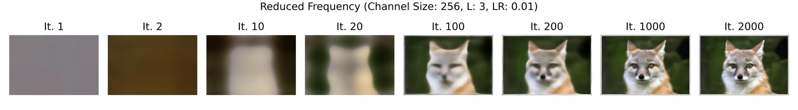
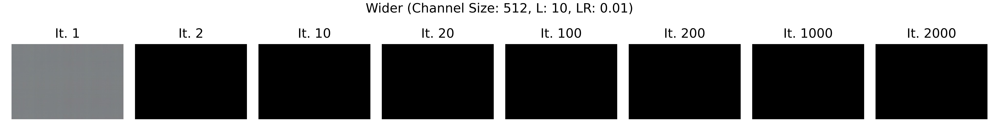
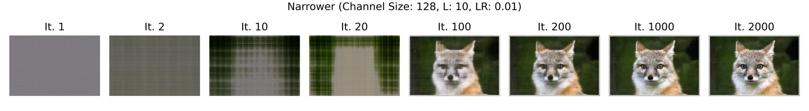
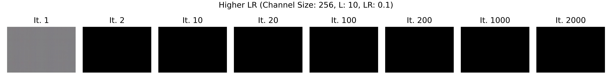
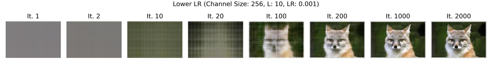
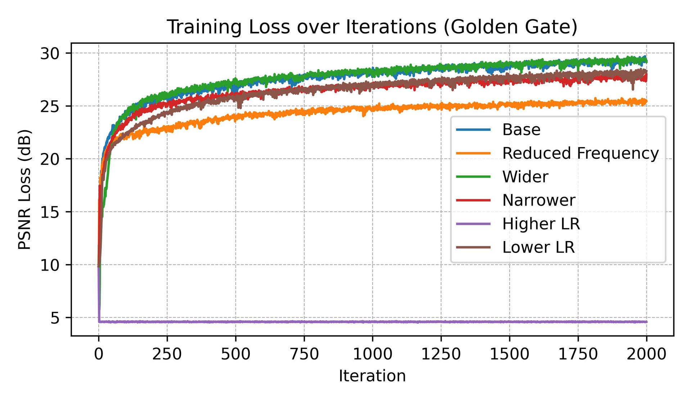
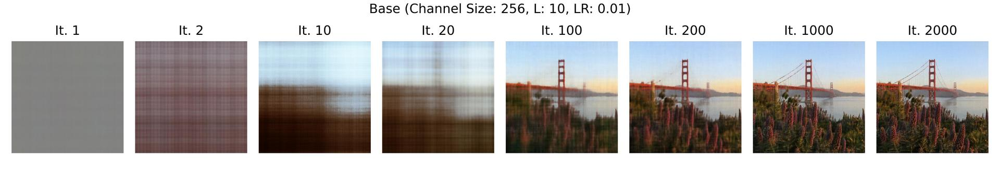
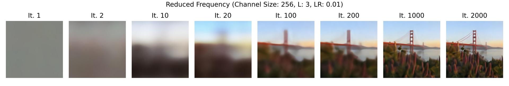
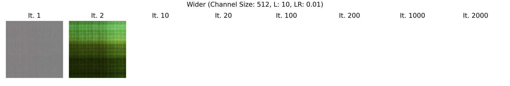
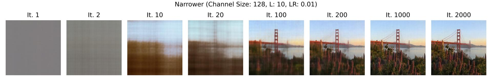
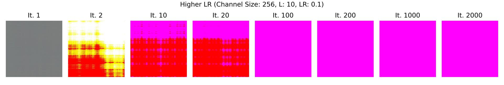
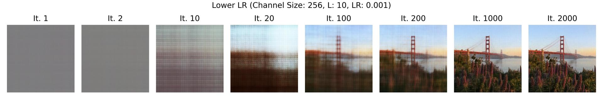
The goal of Part 2 is to extend the simple 2-D neural field from Part 1 into a full 3-D Neural Radiance Field (NeRF) that can learn the geometry, color, and appearance of a scene from multiple calibrated images taken at different camera poses. In this part, you build the complete NeRF pipeline step-by-step: first converting pixels to camera rays using the known intrinsics and extrinsics, then sampling 3-D points along those rays, predicting each point’s density and color with a neural network, and finally volume-rendering these predictions to synthesize the final pixel colors. By training the network to match the posed input images, it implicitly learns a continuous 3-D representation of the scene that can be used to render novel viewpoints and visualize depth. In short, Part 2 teaches how NeRF performs inverse rendering—reconstructing a 3-D scene from 2-D observations through differentiable ray sampling and volume integration.
In Part 2.1, the main task was to generate camera rays that connect each pixel in the image plane with its corresponding line of sight in 3-D space. Using the known camera intrinsics and extrinsics, pixel coordinates were first converted into camera-space directions, and then transformed into world coordinates through the camera-to-world matrix. This produced, for every pixel, a ray origin (the camera center) and a ray direction (the normalized viewing direction). These rays form the geometric foundation for all subsequent steps of the NeRF pipeline, as they define the spatial paths along which 3-D points will later be sampled and evaluated by the neural network to reconstruct the scene.
The following functions were implemented:
- transform() maps these 3-D camera points into world coordinates using the camera-to-world transformation matrix.
- pixel_to_camera() converts 2-D pixel coordinates into 3-D points in the camera coordinate system using the camera’s intrinsic matrix.
- pixel_to_ray() combines both steps to compute, for each pixel, the ray origin (camera position) and ray direction (viewing direction in world space).
In thist task, the focus was on taking the camera rays generated in the previous step and sampling a sequence of 3-D points along each ray. This was done between predefined near and far bounds, effectively discretizing the continuous ray into a set of evenly spaced positions in space. These sampled points represent the locations where the neural network will later predict color and density values. By sampling multiple points per ray, the model gains the ability to approximate the volumetric structure of the scene rather than relying on a single surface point. This step bridges the gap between 2-D image rays and the continuous 3-D volume that NeRF learns to represent.
In Part 2.3, the task was to extend the dataloader from Part 1 to work with multi-view images and the newly implemented raygeneration pipeline. Instead of returning only pixel coordinates and colors, the dataloader now converts sampled pixel locations into full camerarays, outputting for each sampled pixel its corresponding rayorigin, raydirection, and RGBcolor. This ensures that each training sample represents a 3-D observation of the scene rather than a simple 2-D pixel. To verify correctness, the provided visualization code can be used to plot the cameras, rays, and sampled points in 3-D confirming that all rays align correctly within the camera frustum. This integration step establishes a complete data flow from image pixels to 3-D rays, preparing the system for learning the radiance field in later parts.
The following figure shows randomly sampled rays and confirms that everything works correctly.
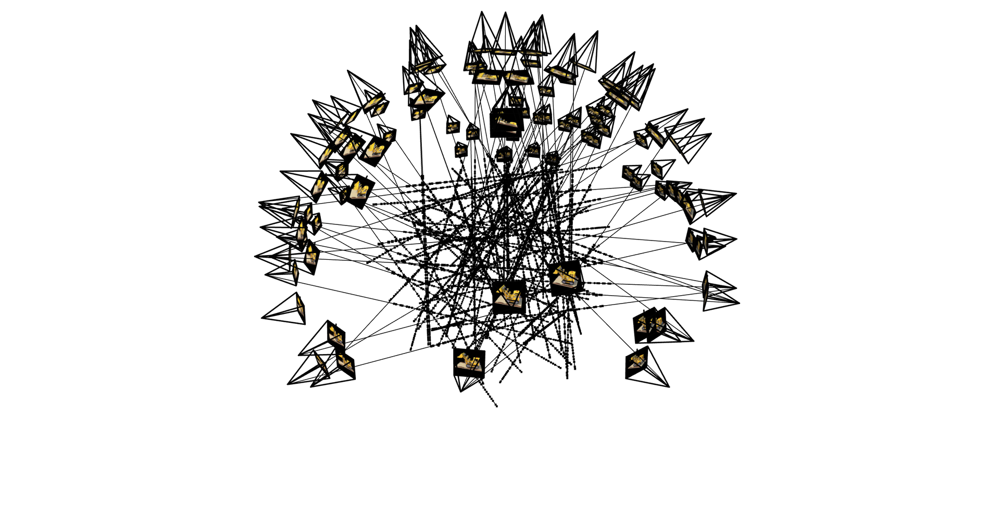
The Neural Radiance Field is implemented as a deep neural network that maps spatial coordinates and viewing directions to color and density values. This network is enhanced to handle higher-dimensional inputs (3D position and view direction vectors) and outputs (RGB colors plus density), compared to the simple MLP from Part 1. The network architecture is shown in the figure below:
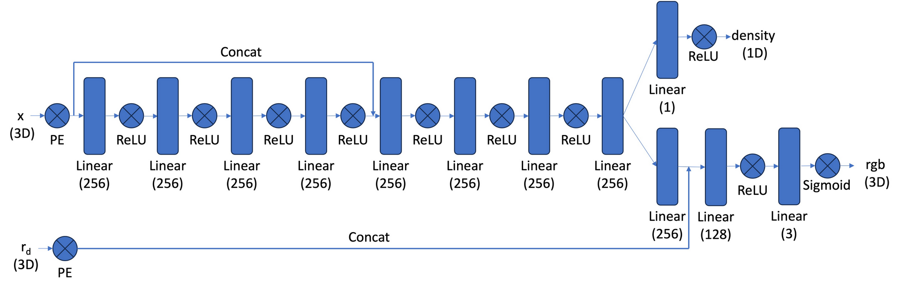
Volume rendering combines the color and density predictions along each ray into a final rendered image. The key idea is to simulate how light travels through a semi-transparent volume: each sampled point along a ray contributes to the final pixel color based on its density (how opaque it is) and transmittance (how much light passes through). By integrating these contributions, the model can reconstruct realistic color and depth for every pixel. This step effectively transforms the neural network’s per-point outputs into continuous 2-D images, enabling the system to learn a volumetric representation of the 3-D scene that can later be used to render new viewpoints.
The model was trained using 10000 rays, 2000 iterations and a learning rate of 1e-3. The sample images show the reconstructed images after N iterations and the PSNR.
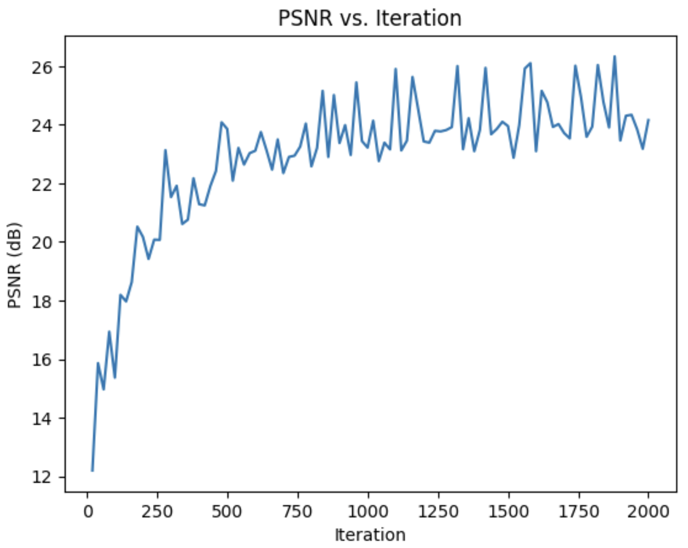
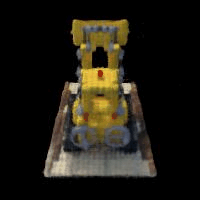
An attempt was made to train the NeRF model on the self-captured dataset from Part 0. Although the visualization of the estimated camera poses looked correct, the training consistently failed to converge the PSNR remained around 12 dB throughout, even after experimenting with different learning rates and hyperparameter settings.
Ultimately, this task had too many open parameters that I couldn't definitively solve or get right with my experience and intuition. This was unfortunately true for both the Lafufu dataset and my own images.